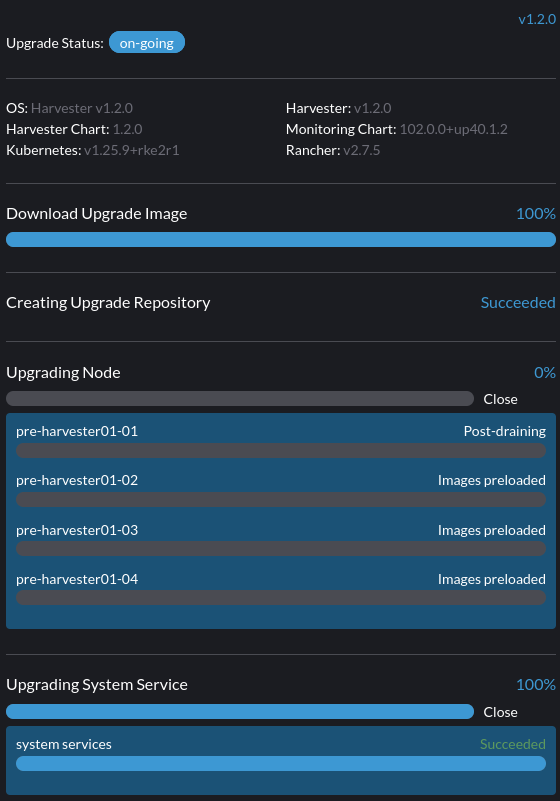

|
Ce document a été traduit à l'aide d'une technologie de traduction automatique. Bien que nous nous efforcions de fournir des traductions exactes, nous ne fournissons aucune garantie quant à l'exhaustivité, l'exactitude ou la fiabilité du contenu traduit. En cas de divergence, la version originale anglaise prévaut et fait foi. |
Mise à niveau de v1.1.2 vers v1.2.0 (non recommandée)
|
En raison des problèmes connus rencontrés dans v1.2.0 : Nous ne recommandons pas de mettre à niveau vers v1.2.0. Veuillez mettre à niveau votre cluster v1.1.x vers v1.2.1. |
informations générales
|
Avant de commencer une mise à niveau, vous pouvez exécuter le script de pré-vérification pour vous assurer que le cluster est dans un état stable. Pour plus de détails, veuillez visiter ce URL pour le script. |
Une fois qu’il y a une version pouvant être mise à niveau, la page du tableau de bord GUI de Harvester affichera un bouton de mise à niveau. Pour plus de détails, veuillez vous référer à démarrer une mise à niveau.
Pour la mise à niveau de l’environnement isolé physiquement, veuillez vous référer à préparer une mise à niveau isolée physiquement.
Problèmes connus
1. Une mise à niveau ne peut pas commencer et signale "validator.harvesterhci.io" denied the request: managed chart rancher-monitoring is not ready, please wait for it to be ready
Si un cluster est configuré avec un réseau de stockage, une mise à niveau ne peut pas commencer avec le message suivant.

2. Une mise à niveau est bloquée dans Creating Upgrade Repository
Lors d’une mise à niveau, Création du dépôt de mise à niveau est bloquée dans l’état En attente :

Veuillez effectuer les étapes suivantes pour vérifier si le cluster rencontre le problème :
-
Vérifiez le pod du dépôt de mise à niveau :

Si le pod
virt-launcher-upgrade-repo-hvst-<upgrade-name>reste dansContainerCreating, votre cluster pourrait avoir rencontré ce problème. Dans ce cas, passez à l’étape 2. -
Vérifiez le volume du dépôt de mise à niveau dans l’interface Longhorn.
-
Naviguez vers la page Volume.
-
Vérifiez le volume de la VM du dépôt de mise à niveau. Il devrait être attaché à un pod appelé
virt-launcher-upgrade-repo-hvst-<upgrade-name>. Si l’une des répliques du volume reste dansStopped(couleur grise), le cluster rencontre le problème.
-
Problème lié :
-
Solution de contournement :
-
Supprimez la réplique
Stoppedde l’interface Longhorn. Ou
-
3. Une mise à niveau est bloquée lors du pré-drain d’un nœud.
À partir de la version v1.1.0, Harvester attendra que tous les volumes deviennent sains (lorsque le nombre de nœuds >= 3) avant de mettre à niveau un nœud. En général, vous pouvez vérifier la santé des volumes si une mise à niveau est bloquée dans l’état "pré-drain".
Visitez "Accéder à Longhorn intégré" pour voir comment accéder à l’interface Longhorn intégrée.
Vous pouvez également vérifier les journaux des tâches de pré-drain. Veuillez vous référer à Phase 4 : Mettre à niveau les nœuds dans le guide de dépannage.
4. Une mise à niveau est bloquée lors de la mise à niveau du premier nœud : Le travail a été actif plus longtemps que le délai spécifié.
Une mise à niveau échoue, comme indiqué dans la capture d’écran ci-dessous :

5. Une mise à niveau est bloquée dans l’état "pré-drain"
Vous pourriez voir qu’une mise à niveau est bloquée dans l’état "pré-drain" :

À ce stade, Kubernetes est censé drainer la charge de travail sur le nœud, mais certaines raisons peuvent provoquer un blocage du processus.
5.1 Le nœud contient un pod Longhorn instance-manager-r qui sert des volumes à réplique unique
Longhorn n’autorise pas le drainage d’un nœud si le nœud contient la dernière réplique survivante d’un volume. Pour vérifier si un nœud rencontre cette situation, suivez ces étapes :
-
Listez les volumes à réplique unique avec la commande :
kubectl get volumes.longhorn.io -A -o yaml | yq '.items[] | select(.spec.numberOfReplicas == 1) | .metadata.namespace + "/" + .metadata.name'
Par exemple :
$ kubectl get volumes.longhorn.io -A -o yaml | yq '.items[] | select(.spec.numberOfReplicas == 1) | .metadata.namespace + "/" + .metadata.name' longhorn-system/pvc-d1f19bab-200e-483b-b348-c87cfbba85ab
-
Vérifiez si la réplique se trouve sur le nœud bloqué :
Listez l’ID du nœud de la réplique du volume avec la commande :
kubectl get replicas.longhorn.io -n longhorn-system -o yaml | yq '.items[] | select(.metadata.labels.longhornvolume == "<volume>") | .spec.nodeID'
Par exemple :
$ kubectl get replicas.longhorn.io -n longhorn-system -o yaml | yq '.items[] | select(.metadata.labels.longhornvolume == "pvc-d1f19bab-200e-483b-b348-c87cfbba85ab") | .spec.nodeID' node1
Si le résultat montre que la réplique se trouve sur le nœud où la mise à niveau est bloquée (dans cet exemple, nœud1), votre cluster rencontre ce problème.
Il existe plusieurs façons de résoudre cette situation. Choisissez la méthode la plus appropriée pour votre VM :
-
Éteignez la VM qui utilise le volume à réplique unique pour détacher le volume, permettant à la mise à niveau de continuer.
-
Ajustez le nombre de répliques des volumes à plus d’une.
-
Allez à la page Volume.
-
Localisez le volume problématique et cliquez sur l’icône sur le côté droit, puis sélectionnez Mettre à jour le nombre de répliques :

-
Augmentez le Nombre de répliques et sélectionnez OK.
5.2 Budgets de perturbation de pod Longhorn instance-manager-r mal configurés (PDB)
Un PDB mal configuré pourrait causer ce problème. Pour vérifier si c’est le cas, effectuez les étapes suivantes :
-
Supposez que le nœud bloqué est
harvester-node-1. -
Vérifiez les noms des pods
instance-manager-eouinstance-manager-rsur le nœud bloqué :$ kubectl get pods -n longhorn-system --field-selector spec.nodeName=harvester-node-1 | grep instance-manager instance-manager-r-d4ed2788 1/1 Running 0 3d8h
La sortie ci-dessus montre que le pod
instance-manager-r-d4ed2788est sur le nœud. -
Vérifiez les journaux de Rancher et assurez-vous que le pod
instance-manager-eouinstance-manager-rne peut pas être vidé :$ kubectl logs deployment/rancher -n cattle-system ... 2023-03-28T17:10:52.199575910Z 2023/03/28 17:10:52 [INFO] [planner] rkecluster fleet-local/local: waiting: draining etcd node(s) custom-4f8cb698b24a,custom-a0f714579def 2023-03-28T17:10:55.034453029Z evicting pod longhorn-system/instance-manager-r-d4ed2788 2023-03-28T17:10:55.080933607Z error when evicting pods/"instance-manager-r-d4ed2788" -n "longhorn-system" (will retry after 5s): Cannot evict pod as it would violate the pod's disruption budget.
-
Exécutez la commande pour vérifier s’il y a un PDB associé au nœud bloqué :
$ kubectl get pdb -n longhorn-system -o yaml | yq '.items[] | select(.spec.selector.matchLabels."longhorn.io/node"=="harvester-node-1") | .metadata.name' instance-manager-r-466e3c7f
-
Vérifiez le propriétaire du gestionnaire d’instances pour ce PDB :
$ kubectl get instancemanager instance-manager-r-466e3c7f -n longhorn-system -o yaml | yq -e '.spec.nodeID' harvester-node-2
Si la sortie ne correspond pas au nœud bloqué (dans cet exemple,
harvester-node-2ne correspond pas au nœud bloquéharvester-node-1), alors nous pouvons conclure que ce problème se produit. -
Avant d’appliquer la solution de contournement, vérifiez si tous les volumes sont sains :
kubectl get volumes -n longhorn-system -o yaml | yq '.items[] | select(.status.state == "attached")| .status.robustness'
La sortie doit être
healthy. Si ce n’est pas le cas, vous voudrez peut-être déverrouiller les nœuds pour rendre le volume à nouveau sain. -
Supprimer le PDB mal configuré :
kubectl delete pdb instance-manager-r-466e3c7f -n longhorn-system
5.3 Le pod instance-manager-e n’a pas pu être vidé
Lors d’une mise à niveau, vous pourriez rencontrer un problème où vous ne pouvez pas vider le pod instance-manager-e. Lorsque cette situation se produit, vous verrez des messages d’erreur dans les journaux de Rancher comme ceux montrés ci-dessous :
$ kubectl logs deployment/rancher -n cattle-system | grep "evicting pod" evicting pod longhorn-system/instance-manager-r-a06a43f3437ab4f643eea7053b915a80 evicting pod longhorn-system/instance-manager-e-452e87d2 error when evicting pods/"instance-manager-r-a06a43f3437ab4f643eea7053b915a80" -n "Longhorn-system" (will retry after 5s): Cannot evict pod as it would violate the pod's disruption budget. error when evicting pods/"instance-manager-e-452e87d2" -n "longhorn-system" (will retry after 5s): Cannot evict pod as it would violate the pod's disruption budget.
Vérifiez le instance-manager-e pour voir si des instances de moteur restent.
$ kubectl get instancemanager instance-manager-e-452e87d2 -n longhorn-system -o yaml | yq -e ".status.instances"
pvc-7b120d60-1577-4716-be5a-62348271025a-e-1cd53c57:
spec:
name: pvc-7b120d60-1577-4716-be5a-62348271025a-e-1cd53c57
status:
endpoint: ""
errorMsg: ""
listen: ""
portEnd: 10001
portStart: 10001
resourceVersion: 0
state: running
type: ""
Dans cet exemple, le instance-manager-e-452e87d2 a toujours une instance de moteur, donc vous ne pouvez pas vider le pod.
Vous devez vérifier les numéros de moteur pour voir si un numéro de moteur est redondant. Chaque PVC ne devrait avoir qu’un seul moteur.
# kubectl get engines -n longhorn-system -l longhornvolume=pvc-7b120d60-1577-4716-be5a-62348271025a NAME STATE NODE INSTANCEMANAGER IMAGE AGE pvc-76120d60-1577-4716-be5a-62348271025a-e-08220662 running harvester-qv4hd instance-manager-e-625d715e2f2e7065d64339f9b31407c2 longhornio/longhorn-engine:v1.4.3 2d12h pvc-7b120d60-1577-4716-be5a-62348271025a-e-lcd53c57 running harvester-lhlkv instance-manager-e-452e87d2 longhornio/longhorn-engine:v1.4.3 4d10h
L’exemple ci-dessus montre que deux moteurs existent pour le même PVC, ce qui est un problème connu dans Longhorn #6642. Pour résoudre cela, supprimez le moteur redondant pour permettre à la mise à niveau de continuer.
Pour déterminer quel moteur est le bon, utilisez la commande suivante :
$ kubectl get volumes pvc-7b120d60-1577-4716-be5a-62348271025a -n longhorn-system NAME STATE ROBUSTNESS SCHEDULED SIZE NODE AGE pvc-7b120d60-1577-4716-be5a-62348271025a attached healthy 42949672960 harvester-q4vhd 4d10h
Dans cet exemple, le volume pvc-7b120d60-1577-4716-be5a-62348271025a est actif sur le nœud harvester-q4vhd, indiquant que le moteur ne fonctionnant pas sur ce nœud est redondant.
Pour rendre le moteur inactif et déclencher sa suppression automatique par Longhorn, exécutez la commande suivante :
$ kubectl patch engine pvc-7b120d60-1577-4716-be5a-62348271025a-e-lcd53c57 -n longhorn-system --type='json' -p='[{"op": "replace", "path": "/spec/active", "value": false}]'
engine.longhorn.io/pvc-7b120d60-1577-4716-be5a-62348271025a-e-lcd53c57 patched
Après quelques secondes, vous pouvez vérifier l’état du moteur :
$ kubectl get engine -n longhorn-system|grep pvc-7b120d60-1577-4716-be5a-62348271025a pvc-7b120d60-1577-4716-be5a-62348271025a-e-08220b62 running harvester-q4vhd instance-manager-e-625d715e2f2e7065d64339f9631407c2 longhornio/longhorn-engine:v1.4.3 2d13h
Le pod instance-manager-e devrait maintenant se vider avec succès, permettant à la mise à niveau de se poursuivre.
6. Une mise à niveau est bloquée dans l’état Service Système en Cours de Mise à Niveau
Si vous remarquez que la mise à niveau est bloquée dans l’état Service Système en Cours de Mise à Niveau pendant une longue période, vous devrez peut-être enquêter pour savoir si la mise à niveau est bloquée dans la phase apply-manifests.

Le POD prometheus-rancher-monitoring-prometheus-0 doit être supprimé
-
Vérifiez le journal du pod
apply-manifestspour voir si les messages suivants se répètent.$ kubectl -n harvester-system logs hvst-upgrade-md6wr-apply-manifests-wqslg --tail=10 Tue Sep 5 10:20:39 UTC 2023 there are still 1 pods in cattle-monitoring-system to be deleted Tue Sep 5 10:20:45 UTC 2023 there are still 1 pods in cattle-monitoring-system to be deleted Tue Sep 5 10:20:50 UTC 2023 there are still 1 pods in cattle-monitoring-system to be deleted Tue Sep 5 10:20:55 UTC 2023 there are still 1 pods in cattle-monitoring-system to be deleted Tue Sep 5 10:21:00 UTC 2023 there are still 1 pods in cattle-monitoring-system to be deleted
-
Vérifiez si le pod
prometheus-rancher-monitoring-prometheus-0est bloqué avec le statutTerminating.$ kubectl -n cattle-monitoring-system get pods NAME READY STATUS RESTARTS AGE prometheus-rancher-monitoring-prometheus-0 0/3 Terminating 0 19d
-
Trouvez l’UID du pod en cours de terminaison avec la commande suivante :
$ kubectl -n cattle-monitoring-system get pod prometheus-rancher-monitoring-prometheus-0 -o jsonpath='{.metadata.uid}' 33f43165-6faa-4648-927d-69097901471c -
Accédez à n’importe quel nœud du cluster via la console ou SSH.
-
Recherchez les messages de journal associés dans
/var/lib/rancher/rke2/agent/logs/kubelet.logen utilisant l’UID du pod.E0905 10:26:18.769199 17399 reconciler.go:208] "operationExecutor.UnmountVolume failed (controllerAttachDetachEnabled true) for volume \"pvc-7781c988-c35b-4cf8-89e6-f2907ef33603\" (UniqueName: \"kubernetes.io/csi/driver.longhorn.io^pvc-7781c988-c35b-4cf8-89e6-f2907ef33603\") pod \"33f43165-6faa-4648-927d-69097901471c\" (UID: \"33f43165-6faa-4648-927d-69097901471c\") : UnmountVolume.NewUnmounter failed for volume \"pvc-7781c988-c35b-4cf8-89e6-f2907ef33603\" (UniqueName: \"kubernetes.io/csi/driver.longhorn.io^pvc-7781c988-c35b-4cf8-89e6-f2907ef33603\") pod \"33f43165-6faa-4648-927d-69097901471c\" (UID: \"33f43165-6faa-4648-927d-69097901471c\") : kubernetes.io/csi: unmounter failed to load volume data file [/var/lib/kubelet/pods/33f43165-6faa-4648-927d-69097901471c/volumes/kubernetes.io~csi/pvc-7781c988-c35b-4cf8-89e6-f2907ef33603/mount]: kubernetes.io/csi: failed to open volume data file [/var/lib/kubelet/pods/33f43165-6faa-4648-927d-69097901471c/volumes/kubernetes.io~csi/pvc-7781c988-c35b-4cf8-89e6-f2907ef33603/vol_data.json]: open /var/lib/kubelet/pods/33f43165-6faa-4648-927d-69097901471c/volumes/kubernetes.io~csi/pvc-7781c988-c35b-4cf8-89e6-f2907ef33603/vol_data.json: no such file or directory" err="UnmountVolume.NewUnmounter failed for volume \"pvc-7781c988-c35b-4cf8-89e6-f2907ef33603\" (UniqueName: \"kubernetes.io/csi/driver.longhorn.io^pvc-7781c988-c35b-4cf8-89e6-f2907ef33603\") pod \"33f43165-6faa-4648-927d-69097901471c\" (UID: \"33f43165-6faa-4648-927d-69097901471c\") : kubernetes.io/csi: unmounter failed to load volume data file [/var/lib/kubelet/pods/33f43165-6faa-4648-927d-69097901471c/volumes/kubernetes.io~csi/pvc-7781c988-c35b-4cf8-89e6-f2907ef33603/mount]: kubernetes.io/csi: failed to open volume data file [/var/lib/kubelet/pods/33f43165-6faa-4648-927d-69097901471c/volumes/kubernetes.io~csi/pvc-7781c988-c35b-4cf8-89e6-f2907ef33603/vol_data.json]: open /var/lib/kubelet/pods/33f43165-6faa-4648-927d-69097901471c/volumes/kubernetes.io~csi/pvc-7781c988-c35b-4cf8-89e6-f2907ef33603/vol_data.json: no such file or directory"
Si kubelet continue de se plaindre que le volume échoue à se démonter, appliquez la solution de contournement suivante pour permettre à la mise à niveau de se poursuivre.
-
Supprimez de force le pod bloqué avec le statut
Terminatingavec la commande suivante :kubectl delete pod prometheus-rancher-monitoring-prometheus-0 -n cattle-monitoring-system --force
Plusieurs PODs dans l’espace de noms cattle-monitoring-system doivent être supprimés
-
Vérifiez le journal du pod
apply-manifestspour voir si les messages suivants se répètent.there are still 10 pods in cattle-monitoring-system to be deleted Fri Dec 8 19:06:56 UTC 2023 there are still 10 pods in cattle-monitoring-system to be deleted Fri Dec 8 19:07:01 UTC 2023
Lorsqu’il continue d’afficher 10 (ou un autre nombre) de pods, il rencontre le problème ci-dessous.
The monitoring feature is deployed from the rancher-monitoring ManagedChart, in Harvester v1.2.0,v1.2.1, this ManagedChart is converted to Harvester Addon feature when upgrading. The ManagedChart rancher-monitoring is deleted, normally, all the generated resources including deployment, daemonset etc. will be deleted automatically. But in this case, those resources are not deleted. The above log reflects the result. Following instructions will guide to delete them manually.
-
Localisez les ressources affectées dans l’espace de noms
cattle-monitoring-system.Root level resources in cattle-monitoring-system Customized CRD: Prometheus Object: rancher-monitoring-prometheus Sub-object: statefulset.apps/prometheus-rancher-monitoring-prometheus Customized CRD: Alertmanager object: rancher-monitoring-alertmanager Sub-object: statefulset.apps/alertmanager-rancher-monitoring-alertmanager Deployment: rancher-monitoring-grafana rancher-monitoring-kube-state-metrics rancher-monitoring-operator rancher-monitoring-prometheus-adapter Daemonset: rancher-monitoring-prometheus-node-exporter
-
Supprimez les ressources affectées.
Use below commands to delete them, meanwhile check the log of the `apply-manifests` until it does not report `there are still x pods in cattle-monitoring-system to be deleted`. kubectl delete prometheus rancher-monitoring-prometheus -n cattle-monitoring-system kubectl delete alertmanager rancher-monitoring-alertmanager -n cattle-monitoring-system kubectl delete deployment rancher-monitoring-grafana -n cattle-monitoring-system kubectl delete deployment rancher-monitoring-kube-state-metrics -n cattle-monitoring-system kubectl delete deployment rancher-monitoring-operator -n cattle-monitoring-system kubectl delete deployment rancher-monitoring-prometheus-adapter -n cattle-monitoring-system kubectl delete daemonset rancher-monitoring-prometheus-node-exporter -n cattle-monitoring-system
Vous devrez peut-être exécuter certaines des commandes plusieurs fois pour supprimer complètement les ressources.
7. La mise à niveau est bloquée dans l’état Upgrading System Service
Si une mise à niveau est bloquée dans un état Upgrading System Service pendant une période prolongée, certains certificats de services système peuvent avoir expiré. Pour enquêter et résoudre ce problème, suivez ces étapes :
-
Trouvez le nom du job
apply-manifestavec la commande :kubectl get jobs -n harvester-system -l harvesterhci.io/upgradeComponent=manifest
Exemple de sortie :
NAME COMPLETIONS DURATION AGE hvst-upgrade-9gmg2-apply-manifests 0/1 46s 46s
-
Vérifiez le journal du job avec la commande :
kubectl logs jobs/hvst-upgrade-9gmg2-apply-manifests -n harvester-system
Si les messages suivants apparaissent dans le journal, passez à l’étape suivante :
Waiting for CAPI cluster fleet-local/local to be provisioned (current phase: Provisioning, current generation: 30259)... Waiting for CAPI cluster fleet-local/local to be provisioned (current phase: Provisioning, current generation: 30259)... Waiting for CAPI cluster fleet-local/local to be provisioned (current phase: Provisioning, current generation: 30259)... Waiting for CAPI cluster fleet-local/local to be provisioned (current phase: Provisioning, current generation: 30259)...
-
Vérifiez l’état du cluster CAPI avec la commande :
kubectl get clusters.provisioning.cattle.io local -n fleet-local -o yaml
Si vous voyez une condition similaire à celle ci-dessous, il est probable que le cluster ait rencontré le problème :
- lastUpdateTime: "2023-01-17T16:26:48Z" message: 'configuring bootstrap node(s) custom-24cb32ce8387: waiting for probes: kube-controller-manager, kube-scheduler' reason: Waiting status: Unknown type: Updated -
Trouvez le nom d’hôte de la machine avec la commande suivante, et suivez le solution de contournement pour voir si les certificats de service expirent sur un nœud :
kubectl get machines.cluster.x-k8s.io -n fleet-local <machine_name> -o yaml | yq .status.nodeRef.name
Remplacez
<machine_name>par le nom de la machine dans la sortie de l’étape précédente.Si plusieurs nœuds ont rejoint le cluster à peu près au même moment, vous devez effectuer le solution de contournement sur tous ces nœuds.
8. L’image registry.suse.com/harvester-beta/vmdp:latest n’est pas disponible dans un environnement isolé physiquement.
Harvester n’inclut pas l’image registry.suse.com/harvester-beta/vmdp:latest dans le fichier ISO à partir de la version 1.1.0. Pour les machines virtuelles Windows avant la version 1.1.0, elles utilisaient cette image comme disque de conteneur. Cependant, kubelet peut supprimer les anciennes images pour libérer des octets. Les machines virtuelles Windows ne peuvent pas accéder à un environnement isolé physiquement lorsque cette image est supprimée. Vous pouvez résoudre ce problème en changeant l’image pour registry.suse.com/suse/vmdp/vmdp:2.5.4.2 et en redémarrant les machines virtuelles Windows.
9. Une mise à niveau est bloquée dans l’état post-drainage.
|
Ce problème connu est corrigé dans la version 1.2.1. |
Le nœud peut être bloqué dans le processus de mise à niveau de l’OS si vous rencontrez l’état post-drainage, comme indiqué ci-dessous.

Harvester utilise elemental upgrade pour nous aider à mettre à niveau l’OS. Vérifiez les journaux elemental upgrade pour voir s’il y a des erreurs.
Vous pouvez vérifier les journaux elemental upgrade avec les commandes suivantes :
# View the post-drain job, which should be named `hvst-upgrade-xxx-post-drain-xxx`
$ kubectl get pod --selector=harvesterhci.io/upgradeJobType=post-drain -n harvester-system
# Check the logs with the following command
$ kubectl logs -n harvester-system pods/hvst-upgrade-xxx-post-drain-xxxSupposons que vous voyiez l’erreur suivante dans les journaux. Un state.yaml incomplet cause ce problème.
Flag --directory has been deprecated, 'directory' is deprecated please use 'system' instead
INFO[2023-09-13T12:02:42Z] Starting elemental version 0.3.1
INFO[2023-09-13T12:02:42Z] reading configuration form '/tmp/tmp.N6rn4F6mKM'
ERRO[2023-09-13T12:02:42Z] Invalid upgrade command setup undefined state partition
elemental upgrade failed with return code: 33
+ ret=33
+ '[' 33 '!=' 0 ']'
+ echo 'elemental upgrade failed with return code: 33'
+ cat /host/usr/local/upgrade_tmp/elemental-upgrade-20230913120242.logDans ce cas, Harvester met à niveau l’elemental-cli vers la dernière version. Il essaiera de trouver la partition state à partir de state.yaml. Si le state.yaml est incomplet, il y a une chance qu’il échoue à trouver la partition state.
Le state.yaml incomplet ressemblera à ce qui suit.
# Autogenerated file by elemental client, do not edit
date: "2023-09-13T08:31:42Z"
state:
# we are missing `label` here.
active:
source: dir:///tmp/tmp.01deNrXNEC
label: COS_ACTIVE
fs: ext2
passive: nullSupprimez ce fichier state.yaml incomplet pour appliquer la solution de contournement à ce problème. (Le post-drainage sera réessayé toutes les 10 minutes).
-
Remontez la partition
stateen RW.$ mount -o remount,rw /run/initramfs/cos-state -
Supprimez le
state.yaml.$ rm -f /run/initramfs/cos-state/state.yaml -
Remontez la partition
stateen RO.$ mount -o remount,ro /run/initramfs/cos-state
Après avoir effectué les étapes ci-dessus, vous devriez passer le post-drainage avec la prochaine tentative.
-
Problèmes liés :
-
Solution de contournement :
10. Une mise à niveau est bloquée dans l’état de Service Système en Cours de Mise à Niveau en raison de l’erreur customer provided SSL certificate without IP SAN dans fleet-agent
|
Ce problème connu est corrigé dans la version 1.2.1. |
Si une mise à niveau est bloquée dans un état Service Système en Cours de Mise à Niveau pendant une période prolongée, suivez ces étapes pour enquêter sur ce problème :
-
Trouvez les pods liés à la mise à niveau :
kubectl get pods -A | grep upgrade
Exemple de sortie :
# kubectl get pods -A | grep upgrade cattle-system system-upgrade-controller-5685d568ff-tkvxb 1/1 Running 0 85m harvester-system hvst-upgrade-vq4hl-apply-manifests-65vv8 1/1 Running 0 87m // waiting for managedchart to be ready ..
-
Le pod
hvst-upgrade-vq4hl-apply-manifests-65vv8a le journal de boucle suivant :Current version: 102.0.0+up40.1.2, Current state: WaitApplied, Current generation: 23 Sleep for 5 seconds to retry
-
Vérifiez l’état de tous les bundles. Notez qu’un couple de bundles est
OutOfSync:# kubectl get bundle -A NAMESPACE NAME BUNDLEDEPLOYMENTS-READY STATUS ... fleet-local mcc-local-managed-system-upgrade-controller 1/1 fleet-local mcc-rancher-logging 0/1 OutOfSync(1) [Cluster fleet-local/local] fleet-local mcc-rancher-logging-crd 0/1 OutOfSync(1) [Cluster fleet-local/local] fleet-local mcc-rancher-monitoring 0/1 OutOfSync(1) [Cluster fleet-local/local] fleet-local mcc-rancher-monitoring-crd 0/1 WaitApplied(1) [Cluster fleet-local/local]
-
Le pod
fleet-agent-*a le journal d’erreurs suivant :fleet-agent pod log: time="2023-09-19T12:18:10Z" level=error msg="Failed to register agent: looking up secret cattle-fleet-local-system/fleet-agent-bootstrap: Post \"https://192.168.122.199/apis/fleet.cattle.io/ v1alpha1/namespaces/fleet-local/clusterregistrations\": tls: failed to verify certificate: x509: cannot validate certificate for 192.168.122.199 because it doesn't contain any IP SANs"
-
Vérifiez les paramètres
ssl-certificatesdans Harvester :Depuis la ligne de commande :
# kubectl get settings.harvesterhci.io ssl-certificates NAME VALUE ssl-certificates {"publicCertificate":"-----BEGIN CERTIFICATE-----\nMIIFNDCCAxygAwIBAgIUS7DoHthR/IR30+H/P0pv6HlfOZUwDQYJKoZIhvcNAQEL\nBQAwFjEUMBIGA1UEAwwLZXhhbXBsZS5j...."}Depuis l’interface Web de Harvester :

-
Vérifiez le paramètre
server-url, c’est la valeur de VIP :# kubectl get settings.management.cattle.io -n cattle-system server-url NAME VALUE server-url https://192.168.122.199
-
La cause racine :
L’utilisateur définit le
ssl-certificatesauto-signé avec FQDN dans les paramètres de Harvester, mais leserver-urlpointe vers le VIP, le podfleet-agentéchoue à s’enregistrer.For example: create self-signed certificate for (*).example.com openssl req -x509 -newkey rsa:4096 -sha256 -days 3650 -nodes \ -keyout example.key -out example.crt -subj "/CN=example.com" \ -addext "subjectAltName=DNS:example.com,DNS:*.example.com" The general outputs are: example.crt, example.key
-
La solution de contournement :
Mettez à jour
server-urlavec la valeur dehttps://harv31.example.com# kubectl edit settings.management.cattle.io -n cattle-system server-url setting.management.cattle.io/server-url edited ... # kubectl get settings.management.cattle.io -n cattle-system server-url NAME VALUE server-url https://harv31.example.com
Après l’application de la solution de contournement, le pod
fleet-agentest remplacé automatiquement par Rancher et s’enregistre avec succès, la mise à niveau se poursuit.
11. Une mise à niveau est refusée en raison de managed chart rancher-monitoring-crd is not ready
Lorsque vous commencez une mise à niveau et que Harvester renvoie un message d’erreur tel que : admission webhook "validator.harvesterhci.io" denied the request: managed chart rancher-monitoring-crd is not ready, please wait for it to be ready. Veuillez suivre ce guide de dépannage.